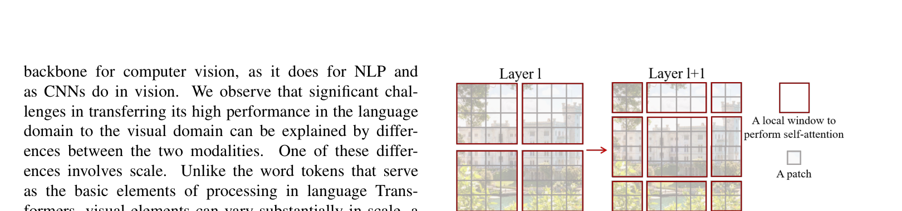
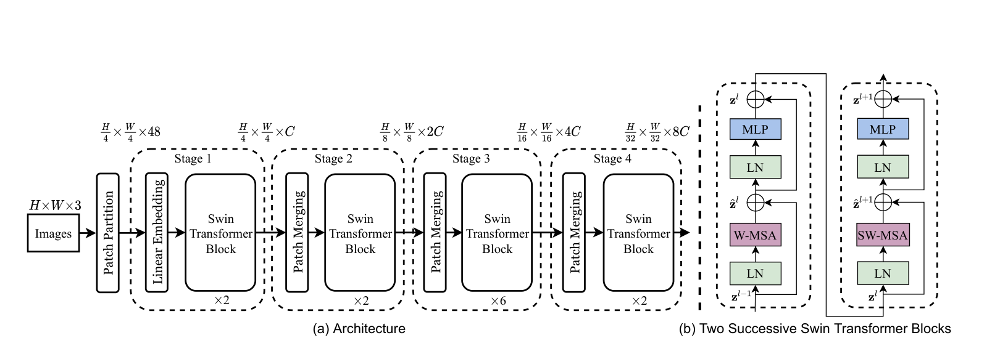
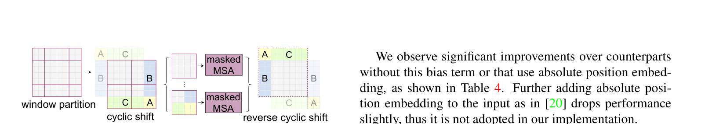

Swin Transformer¶
📄 论文链接：arXiv:2103.14030 | PDF
目录¶
核心要点¶
- Swin Transformer 是 ICCV 2021 最佳论文，提出了一个层级式（Hierarchical）的 Vision Transformer，可作为计算机视觉领域的通用骨干网络。
- 核心贡献是 Shifted Window（移动窗口）自注意力机制：在小窗口内计算自注意力以降低复杂度至线性，同时通过窗口移位实现跨窗口交互，变相达到全局建模能力。
- 引入 Patch Merging 操作实现类似 CNN 池化的下采样，使模型具备多尺度特征提取能力，从而适用于目标检测、语义分割等密集预测任务。
- 实验效果显著：在 ImageNet-1K 分类上达到 87.3% 准确率；在 COCO 目标检测上达到 58.7 AP（比之前最好方法高 2.7 个点）；在 ADE20K 语义分割上达到 53.5 mIoU（比之前最好方法高 3.2 个点）。
- Swin Transformer 将 CNN 的设计先验（局部性、层级结构）与 Transformer 有机结合，成为视觉领域绕不开的 Baseline，后续衍生出 Video-Swin、Swin MLP、SimMIM、Swin V2 等一系列工作。
1. 背景与动机¶
1.1 ViT 的局限性¶
ViT 虽然证明了 Transformer 在视觉分类任务上的潜力，但存在两个关键问题：
- 单一尺度特征：ViT 使用固定的 16×16 patch size，自始至终处理的都是 16 倍下采样率的特征，缺乏多尺度特征表示。而目标检测（如 FPN）和语义分割（如 UNet）等下游任务高度依赖多尺度特征。
- 全局自注意力的平方级复杂度：ViT 在整图上计算自注意力，计算复杂度随图像尺寸呈平方级增长。检测和分割任务通常需要 800×800 甚至更大的输入分辨率，此时即使使用 patch size 16，序列长度仍会上千，计算量难以承受。
1.2 从 NLP 到 Vision 的挑战¶
直接将 Transformer 从 NLP 迁移到视觉领域面临两大挑战：
- 尺度变化：视觉场景中同一语义的物体（如行人、汽车）可能有截然不同的尺寸，这在 NLP 中不存在。
- 高分辨率：图像以像素为基本单位，序列长度极高。之前的工作通过使用后续特征图、patch 切分或窗口化等方式来减少序列长度。
1.3 Swin Transformer 的目标¶
Swin Transformer 的研究动机是证明 Transformer 可以作为视觉领域的通用骨干网络，不仅在分类任务上有效，在检测、分割、视频等所有视觉任务上都能取代 CNN。
2. 方法¶
 Figure 1: Swin Transformer 层级结构
Figure 1: Swin Transformer 层级结构
2.1 整体架构与前向过程¶

Figure 2: 移动窗口注意力机制
Figure 3: Swin Transformer Block 详细结构Swin Transformer 的整体架构分为四个 Stage，具有层级式结构：
Step 1: Patch Partition + Linear Embedding
- 输入图片为标准 224×224×3 的 ImageNet 图像。
- Patch Size 为 4×4（而非 ViT 的 16×16），经过 Patch Partition 后得到 56×56×48 的特征图（56 = 224/4，48 = 4×4×3）。
- 通过 Linear Embedding（一次卷积操作）将向量维度映射到预设值 C。对于 Swin-Tiny，C=96，输出变为 56×56×96。
- 这一步等价于 ViT 中的 Patch Projection。
Step 2-4: 四个 Stage 的层级处理
| Stage | 输入尺寸 | 输出尺寸 | 说明 |
|---|---|---|---|
| Stage 1 | 56×56×96 | 56×56×96 | Swin Transformer Blocks |
| Stage 2 | 28×28×192 | 28×28×192 | Patch Merging + Blocks |
| Stage 3 | 14×14×384 | 14×14×384 | Patch Merging + Blocks |
| Stage 4 | 7×7×768 | 7×7×768 | Patch Merging + Blocks |
每个 Stage 内部先做一次 Patch Merging（Stage 1 除外），再通过若干 Swin Transformer Block，输出尺寸不变。
分类头：Swin Transformer 不使用 CLS token，而是在最后对 7×7 特征图做 Global Average Pooling，得到 1×768 的向量，再接全连接层输出 1000 类分类结果。这与 CNN 的做法一致。
2.2 Patch Merging（下采样操作）¶
Patch Merging 是 Swin Transformer 实现层级式结构的关键操作，类似于 CNN 中的池化：
- 隔点采样：对 H×W×C 的特征图，每隔一个点取一个样本，将其分成 4 个子张量，每个大小为 H/2 × W/2 × C。
- 通道拼接：将 4 个子张量在通道维度拼接，得到 H/2 × W/2 × 4C 的张量。
- 1×1 卷积降维：用 1×1 卷积将通道数从 4C 降至 2C，最终输出 H/2 × W/2 × 2C。
这样实现了空间大小减半、通道数翻倍，与 ResNet 等 CNN 的行为完全一致。例如从 56×56×96 变为 28×28×192。
2.3 基于窗口的自注意力（Window Self-Attention）¶
动机¶
全局自注意力的计算复杂度为 O((HW)²C)，当图像较大时不可承受。Swin Transformer 利用 CNN 的局部性先验（Locality Inductive Bias）——同一物体的不同部位或语义相近的物体大概率出现在相邻区域——将自注意力限制在小窗口内计算。
窗口划分¶
- 将特征图均匀划分为不重叠的窗口，每个窗口包含 M×M 个 patch（默认 M=7，即 49 个 patch）。
- 以 56×56 的特征图为例，每条边有 56/7=8 个窗口，共 64 个窗口。
- 每个窗口内的自注意力序列长度固定为 49，计算复杂度大幅降低。
复杂度分析¶
标准多头自注意力的计算复杂度：
基于窗口的自注意力计算复杂度：
两者前一项相同，后一项从 (HW)² 降为 M²HW。当 H=W=56, M=7 时，相差数十至上百倍。整体计算复杂度随图像大小线性增长而非平方级增长。
2.4 移动窗口（Shifted Window）自注意力¶
问题¶
纯窗口自注意力导致窗口之间完全隔离，无法进行跨窗口信息交互，丧失了 Transformer 的全局建模优势。
解决方案¶
Swin Transformer 采用交替使用普通窗口和移动窗口的策略：
- 第 L 层：使用常规窗口划分，在窗口内计算自注意力。
- 第 L+1 层：将窗口向右下角移动 ⌊M/2⌋ 个 patch（默认移动 3 个），重新划分窗口后再计算自注意力。
这样，第 L+1 层的窗口跨越了第 L 层的窗口边界，实现了 Cross-Window Connection。配合 Patch Merging 逐步增大感受野，到网络深层时，局部窗口注意力已变相等价于全局自注意力。
Swin Transformer Block 的结构¶
一个基本的计算单元由两个连续的 Block 组成：
- LayerNorm → Window Multi-Head Self-Attention → LayerNorm → MLP
- LayerNorm → Shifted Window Multi-Head Self-Attention → LayerNorm → MLP
因此模型配置中每个 Stage 的 Block 数量总是偶数（如 2, 2, 6, 2）。
2.5 高效的批量计算：循环移位与掩码¶
问题¶
移动窗口后，原本 4 个窗口变成了 9 个大小不一的窗口，无法直接 batch 化处理。若用 padding 补齐，窗口数量增至 9 个，计算量增加两倍多。
循环移位（Cyclic Shift）¶
作者提出巧妙的循环移位方案：
- 将移动窗口后得到的 9 个窗口区域，通过循环移位重新排列：把右侧区域移到左侧，下方区域移到上方。
- 重新划分为 4 个等大窗口，窗口数量和大小均保持不变。
掩码机制（Masked Self-Attention）¶
循环移位后，某些窗口内包含了来自不相邻区域的 patch，这些 patch 之间不应计算自注意力。作者设计了掩码模板：
- 同一区域的 patch 之间：掩码值为 0，允许计算自注意力。
- 不同区域的 patch 之间：掩码值为 -100（负无穷近似），加到自注意力矩阵上后经 Softmax 变为 0，等效于屏蔽。
具体而言： - Window 0（左上角）：所有 patch 来自同一区域，无需掩码。 - Window 1（右上角）：包含左右两个不同区域，掩码呈左右分块形式。 - Window 2（左下角）：包含上下两个不同区域，掩码呈上下分块形式。 - Window 3（右下角）：包含四个不同区域，掩码呈四象限分块形式，最为复杂。
计算完成后，还需执行反向循环移位将特征还原到原始位置，以保持图片的空间语义一致性。
这一方案使得只需一次前向过程、仅计算 4 个窗口即可完成移动窗口自注意力，既高效又保持了窗口间的交互。
2.6 相对位置编码¶
Swin Transformer 未使用绝对位置编码，而是采用相对位置编码（Relative Position Bias）。在每个窗口内计算自注意力时，根据 patch 之间的相对位置关系添加可学习的偏置项。这对下游密集预测任务尤为重要，因为位置和上下文信息对检测和分割至关重要。（注：相对位置编码已有大量资料详解，此处不再展开。）
2.7 模型变体¶
Swin Transformer 提供了四种规模的变体，主要区别在于嵌入维度 C 和每个 Stage 的 Block 数量：
| 变体 | 嵌入维度 C | Stage Block 数 | 对标 CNN |
|---|---|---|---|
| Swin-Tiny | 96 | [2, 2, 6, 2] | ResNet-50 |
| Swin-Small | 96 | [2, 2, 18, 2] | ResNet-101 |
| Swin-Base | 128 | [2, 2, 18, 2] | — |
| Swin-Large | 192 | [2, 2, 18, 2] | — |
Swin-Tiny 的计算复杂度与 ResNet-50 相当，Swin-Small 与 ResNet-101 相当，便于公平对比。
3. 实验¶

Figure 4: 高效 batch 计算方法3.1 ImageNet 图像分类¶
ImageNet-1K 预训练：
- Swin-Base 在 384×384 分辨率下达到 84.5% Top-1 准确率，略高于 EfficientNet 的 84.3%（600×600 分辨率）。
- 相比 DeiT-Base（83.1%），提升明显。
- 参数量和 FLOPs 方面，Swin-Base（88M, 47G）略高于 EfficientNet（66M, 37G），总体伯仲之间。
ImageNet-22K 预训练 + ImageNet-1K 微调：
- Swin-Large 达到 87.3% Top-1 准确率，远超 ViT-Large 的 85.2%。
- 这是在不使用 JFT-300M 等私有大规模数据集条件下的最优结果。
3.2 COCO 目标检测¶
不同算法框架下的对比（Table 2a）：
- 在 Mask R-CNN、ATSS、RepPointsV2、Sparse R-CNN 四种算法中，将骨干网络从 ResNet-50 替换为 Swin-Tiny（参数量和 FLOPs 相当），全方位碾压，提升幅度达 3-4 个 AP 点。
同一算法下不同骨干网络的对比（Table 2b）：
- 固定 Cascade Mask R-CNN 算法，Swin-Tiny/S/B 均优于同等规模的 ResNet-50/101 和 DeiT-S。
系统级对比（Table 2c）：
- Swin-Large 结合更强的数据增强和 TTA，在 COCO test-dev 上达到 58.7 AP，比此前最好的 Copy-Paste（56.0 AP）高出 2.7 个点。
3.3 ADE20K 语义分割¶
- Swin-Large 在 ADE20K 上达到 53.5 mIoU，比此前最好的 SETR（ViT-Large, 50.3 mIoU）高出 3.2 个点。
- 值得注意的是，Swin-Large 和 SETR 均使用了 ImageNet-22K 预训练。
3.4 消融实验¶
消融实验验证了移动窗口和相对位置编码的作用：
- 分类任务：移动窗口和相对位置编码各自带来约 1 个点的提升（如从 80.2 到 81.3）。
- 下游任务（COCO / ADE20K）：两者各带来约 3 个点的提升，效果更为显著。这是因为密集预测任务对位置信息和上下文关系更加敏感。
4. 总结¶
4.1 核心贡献回顾¶
- 层级式 Transformer 架构：通过 Patch Merging 实现多尺度特征提取，使 Transformer 具备类似 CNN 的分层结构。
- Shifted Window 自注意力：在线性复杂度下实现跨窗口交互，兼顾效率与全局建模能力。
- 通用视觉骨干网络：在分类、检测、分割等多个任务上全面超越 CNN 和此前的 Transformer 方法。
4.2 影响力与后续发展¶
Swin Transformer 发表后，原作者团队以每月一篇的速度推出了系列工作：
- MoBY（2021.05）：基于 MoCo + BYOL 的自监督 Swin Transformer。
- Video-Swin-Transformer（2021.06）：扩展到视频理解，在 Kinetics-400 上达到 84.9% 准确率。
- Swin MLP（2021.07）：将 Shifted Window 思想应用于 MLP 架构。
- 半监督目标检测（2021.08）：将 Swin Transformer 用于半监督检测。
- SimMIM（2021.12）：受 BEiT/MAE 启发的掩码自监督学习版本。
- Swin V2：30 亿参数的大规模版本，支持 1536×1536 分辨率预训练，COCO 刷到 63.1 AP。
此外，Swin Transformer 还被广泛应用于人脸识别、图像超分（SwinIR）、Person ReID、StyleGAN（StyleSwin）等众多领域，并被 PaddlePaddle、timm、Hugging Face 等主流开源库收录。
4.3 个人评价¶
- Swin Transformer 深度融合了 CNN 的先验知识（局部性、层级结构）与 Transformer 的强大表达能力，可以说是一个"披着 Transformer 皮的 CNN"。
- 在模型大一统方面，ViT 因为不加任何先验就能在视觉和语言两个领域都表现良好，理论上更适合统一架构。但 Swin Transformer 凭借对视觉先验的充分利用，在视觉任务上的实际效果远优于 ViT。
- 作者在结论中提到未来要将 Shifted Window 应用到 NLP 领域，如果成功，Swin Transformer 将成为真正的里程碑式工作。
- 论文中对 CNN、Transformer、MLP 三种架构的深入理解和分析，为后续研究者提供了重要的思考方向，其影响力远超单一模型本身。